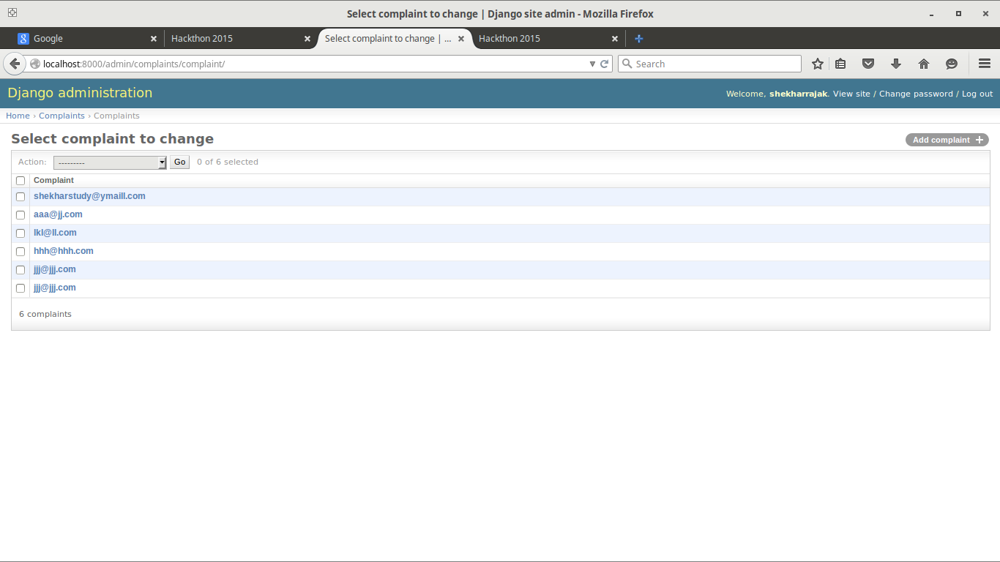
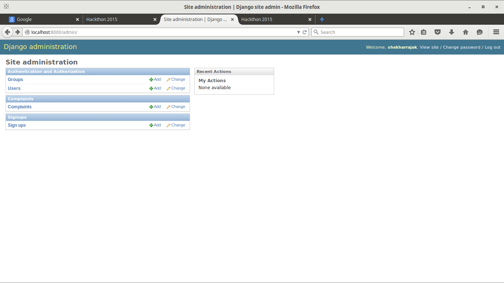
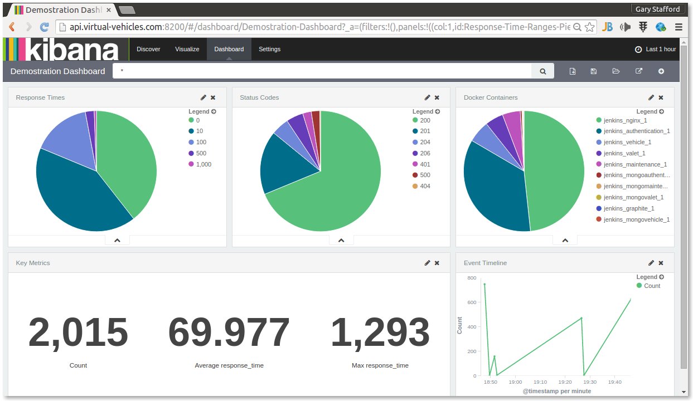
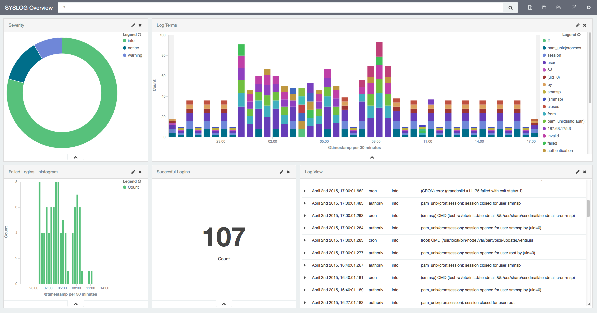
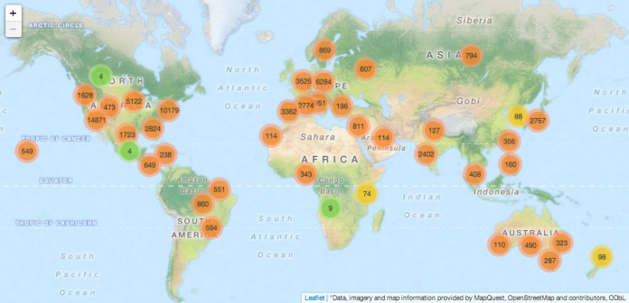

Hackthon 2015
Automated Complaint Registration System
Send a complaint email to us ,We redirect this to respective person
who can solve this problem
Created by HackerDude / @shekharrajak
What I did :
1.web application in django-python
2.In sample web app complainer can complain manually entering problem in textfield and it is saved.http://localhost:8000/admin can see the saved data.
3.To automate this process ,Using db-mailer/other package we send a proper formate of complaint.
Complainer will fill and after submitting data is directly send to the step 2 web app and it is saved. Or we get these data and will fill the web app.
Demo :
Now we have the informattions in admin page.
We need to make it json file or other file which can be input for elasticsearch/kibana.
Integrating our application to Elasticsearch,Kibana,Logstash.
Fixing bugs.
Now we got final JSON file , (list of all complaints categorywise)
Converting json file to html table .

Final steps:
Make it complaints categorywise and send email to whom who can solve this problem. Send confirmation mail to complainer that email is sent to respective officer. After that it is problem statement 6.
ApI I used
1.Email sender/reciever API : IMAP
2.SMS sending API : SinchSMS/Nexmo
3.Location's logitude/latitude : Location_filed Django package
and some other basic django-python packages.
Database screenshots :
 Database screenshots :
Future improvements :
- Get JSON file of databse SQLi .
- Use this JSON file in kibana/elasticsearch/logstash .
- Kibana's feature is :
- Flexible analytics and visualization platform
- real-time summary and charting of streaming data
- Give Shape to Your Data ,Seamless Integration with Elasticsearch
- paid SMTP credential and SMS sender/reciever API work better
Why kibana ?
ScreenShots of kibana
ScreenShots of kibana

ScreenShots of kibana
ScreenShots of kibana
Thank you
BY Shekhar Prasad Rajak
Made with reveal.js
http://github.com/Shekharrajak